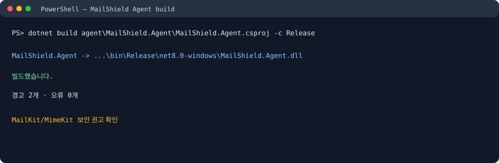
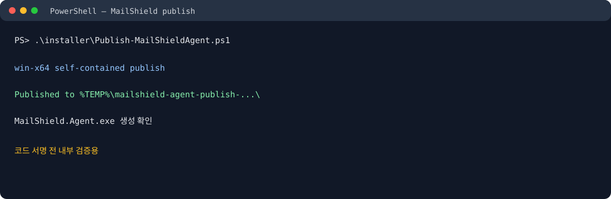
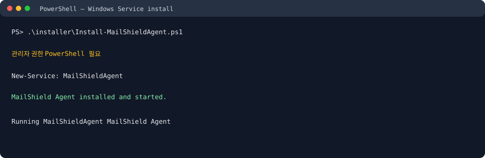

MailShield Windows Agent
설치·실행 사용자 매뉴얼
Windows 백그라운드에서 이메일 보안 이벤트를 감시하고 중앙 서버로 상태를 보고하는 Agent입니다.
Windows ServiceIMAP IDLEDLP현재 상태: self-contained win-x64 내부 테스트 빌드
중요: MailKit/MimeKit 보안 권고가 남아 있습니다. 아래 설치는 내부 테스트용이며 정식 상용 배포 전 보안 검토와 코드 서명이 필요합니다.
1. 사전 준비
- .NET 8 SDK와 Git 저장소가 준비되어 있어야 합니다.
- 관리자 권한 PowerShell을 준비합니다.
- 중앙 서버 URL, 테넌트 ID, 장치 ID를
agent/MailShield.Agent/appsettings.json에 설정합니다. - IMAP 앱 비밀번호는 파일에 저장하지 않고 Windows Credential Manager 또는 DPAPI를 사용합니다.
2. 빌드 확인
cd C:\Users\이상진\Documents\email_checker $dotnet = "$env:LOCALAPPDATA\MailShield\dotnet\dotnet.exe" & $dotnet build .\agent\MailShield.Agent\MailShield.Agent.csproj -c Release

3. 설치 파일 생성
cd C:\Users\이상진\Documents\email_checker Set-ExecutionPolicy -Scope Process Bypass .\installer\Publish-MailShieldAgent.ps1

4. Windows Service 설치
PowerShell을 관리자 권한으로 실행해야 합니다.
cd C:\Users\이상진\Documents\email_checker Set-ExecutionPolicy -Scope Process Bypass .\installer\Install-MailShieldAgent.ps1

5. 설정
{
"MailShield": {
"ControlPlaneUrl": "https://your-control-plane.example",
"TenantId": "조직-GUID",
"DeviceId": "장치-ID",
"ImapHost": "imap.example.com",
"ImapPort": 993,
"MailAddress": "user@example.com",
"ImapFolders": "INBOX,Sent"
}
}앱 비밀번호는 MAILSHIELD_IMAP_APP_PASSWORD 환경변수로 임시 공급할 수 있습니다. 운영 환경에서는 보안 저장소를 사용하십시오.
6. 상태 확인·중지·제거
Get-Service MailShieldAgent Stop-Service MailShieldAgent Start-Service MailShieldAgent sc.exe delete MailShieldAgent
7. 정상 동작 기준
- 서비스가 Running 상태입니다.
- Agent 로그에 heartbeat와 IMAP 연결 상태가 기록됩니다.
- 설정 시 INBOX·Sent 감시가 시작됩니다.
- 정책은
%LOCALAPPDATA%\MailShield\policy.bin에 DPAPI로 암호화됩니다. - 개인정보 원문과 앱 비밀번호가 로그에 나타나지 않습니다.
8. 문제 해결
서비스 시작 실패: 관리자 권한과 Windows 이벤트 로그를 확인합니다.
IMAP 실패: 호스트·포트·TLS·앱 비밀번호를 확인합니다.
heartbeat 실패: ControlPlaneUrl, HTTPS 인증서와 네트워크를 확인합니다.
보안 경고: MailKit/MimeKit 권고 해결 전 외부 상용 배포를 하지 않습니다.